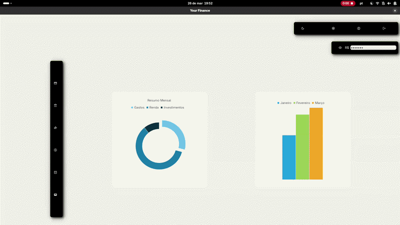
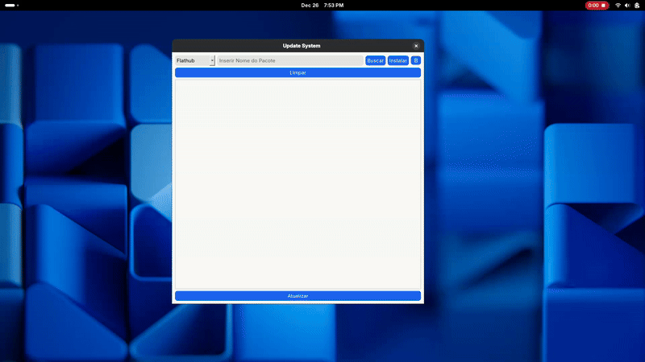

Relatório de Pesquisa de Mercado

O problema de negócio proposto pelas partes interessadas, se define em encontrar
opções de melhores produtos vendidos e para quais públicos os mesmos se destinam.
Para além disso também houve o interesse sobre a sazonalidade dos produtos, com isso,
também há a questão de encontrar um padrão de compra dada à época do ano.
Saiba mais
Your Finances

O Your Finance nasceu com o propósito de permitir ter um maior controle financeiro, assim permitindo deixar de lado
as planilhas gigantescas.
Saiba mais
Manager Packages

Criado com o propósito de automatizar funções corriqueiras, como: atualizar, instalar e desistalar pacotes no sistema operacional.
Esta ferramente foi criada especialmente para a Distro linux Fedora.
Saiba mais
Caso de Estudo: Titanic

Iniciar um processo de análise de dados sem uma definição pode levar muitas das vezes a própria desistência do projeto,
com isso a ideia central desse caso de estudo é entender como a aplicação do método EDA pode ajudar a
fundamentar ideias para processos mais
complexos envolveno análises preditivas.
Saiba mais